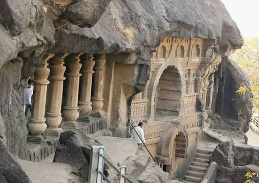
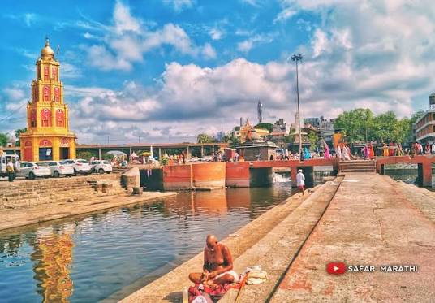
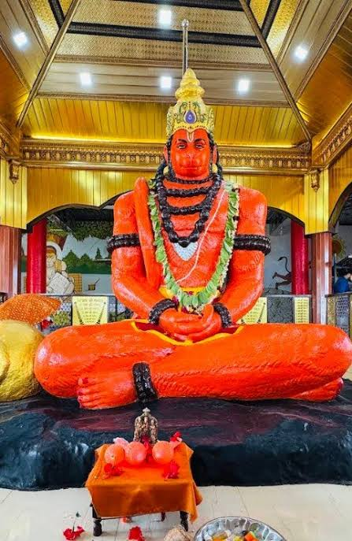
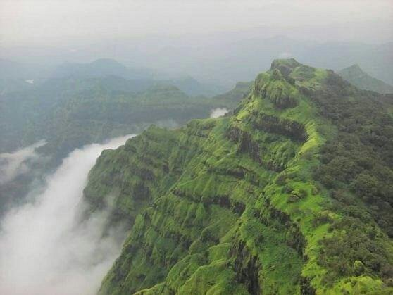
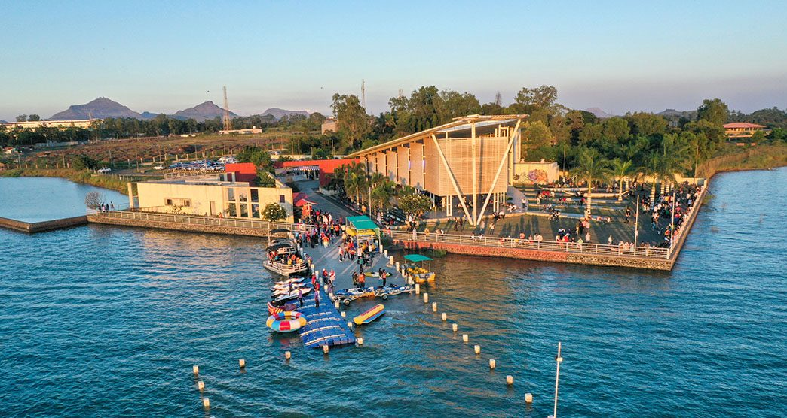

Top Places to Visit
Trimbakeshwar Temple

A famous ancient temple located near the Brahmagiri hills.
Pandavleni Caves

Ancient rock-cut caves offering history and beautiful city views.
Sita Gufa
A well-known religious place situated in the Panchavati area.
Ramkund

A sacred bathing place on the bank of the Godavari River.
Anjaneri Hills


A popular trekking and nature destination near Nashik.
Gangapur Dam

A peaceful location known for beautiful views and sunsets.